1. NEXCORE Collaboration Platform(NCP) 프로젝트 관리
NCP를 기반으로 NEXCORE UML Modeler는 다른 ALM 도구(Requirement Management, Data Modeler, Application Developer)들과 연계하여 데이타를 공유할 수 있습니다. 다른 도구와 연계하기 위한 선행조건으로 NEXCORE Collaboration Server(이하 NCS)에서 등록된 NCP 프로젝트를 각 도구에서 공통으로 사용해야 합니다. NCP Project를 사용하지 않으면 다른 도구와 연계할 수 없습니다.
1.1 NCP 프로젝트 생성
메뉴의 [New] > [NEXCORE UML 모델러 프로젝트] 선택 시 나타나는 기존의 프로젝트 생성 다이얼로그에 [찾기] 버튼이 추가되었습니다. 이 버튼을 사용해 NEXCORE Collaboration Server(이하 NCS) 에 등록된 NCP 프로젝트를 도구로 가져와서 사용할 수 있습니다.
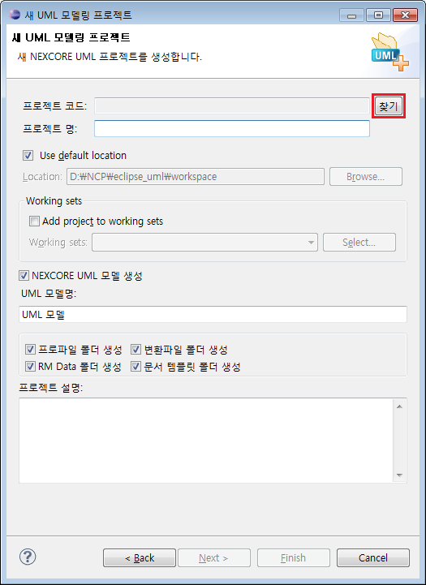
[찾기] 버튼을 누르게 되면 아래와 같은 다이얼로그가 나타나게 됩니다. 다이얼로그에는 NCS에서 등록된 프로젝트 리스트가 보여지고 이 중 도구로 가져올 프로젝트를 하나 선택한 후 [OK] 버튼을 누릅니다.
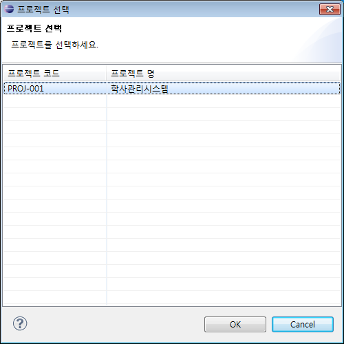
프로젝트 생성 다이얼로그에 선택한 NCP 프로젝트 정보가 표시됩니다. 프로젝트 코드는 고유의 식별자로 사용자가 변경할 수 없고 프로젝트 명은 사용자가 임의로 변경할 수 있습니다.
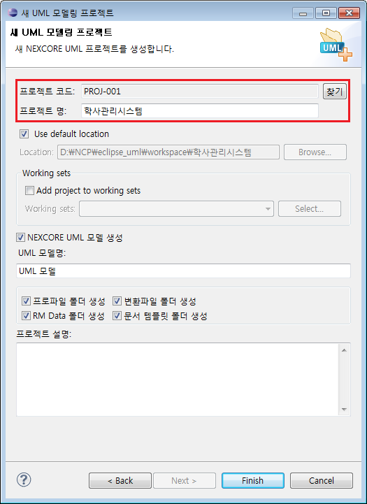
생성된 NCP 프로젝트는 기존 UML 프로젝트의 기존 기능들을 동일하게 사용할 수 있으며 추가로 다른 ALM 도구와의 연계기능을 사용할 수 있습니다.
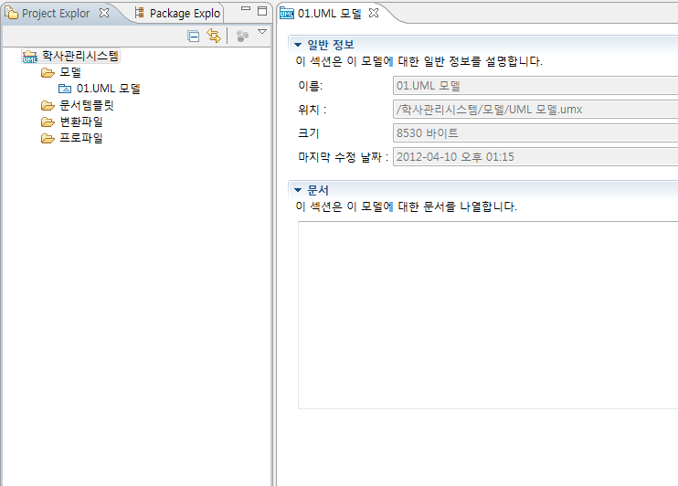
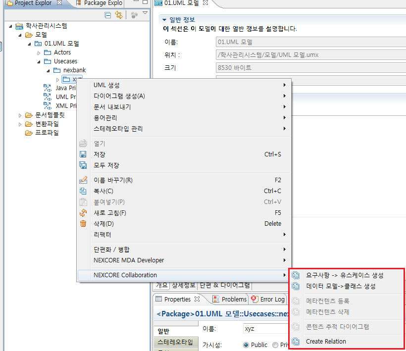
1.2 NCP 프로젝트 관리
최초 프로젝트 생성 시 NCP 프로젝트 정보를 가져오지 않았거나 다른 NCP 프로젝트로 정보를 변경하고 싶을 때 프로젝트의 [Properties] 창을 통해 프로젝트 정보를 관리할 수 있습니다. UML 프로젝트 선택 후 [마우스 우클릭] > [Properties] > [NCP Project]를 선택하면 아래와 같은 페이지가 나타나게 됩니다. 페이지에는 NCP 프로젝트의 기본적인 정보가 표시되며 프로젝트 생성 다이얼로그의 [찾기] 버튼과 동일한 버튼이 존재합니다.
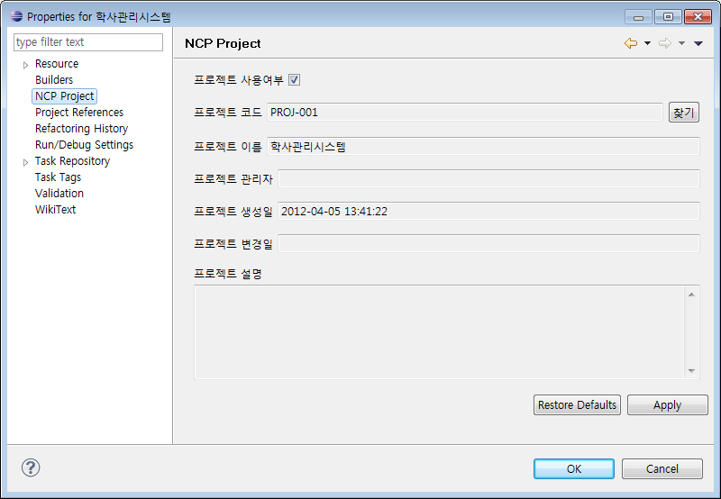
[찾기] 버튼을 누르게 되면 아래와 같은 다이얼로그가 나타나게 됩니다. 다이얼로그에는 NCS에 등록된 프로젝트 리스트가 보여지고 이 중 도구로 가져올 프로젝트를 하나 선택한 후 [OK] 버튼을 누릅니다.

선택한 프로젝트로 NCP 프로젝트를 변경 할 수 있습니다.
2. RM (Requirement Management) 도구 연계
RM 도구에서 생성한 Requirement를 가져와 UML 도구의 UseCase를 생성하는 기능입니다.
2.1 RM Requirement - UML UseCase 연계
UseCase를 생성할 위치에서 마우스 우클릭 후 [NEXCORE Collaboration] > [요구사항 -> 유스케이스 생성] 을 선택하면 RM Requirement를 가져오는 다이얼로그가 나타나게 됩니다.
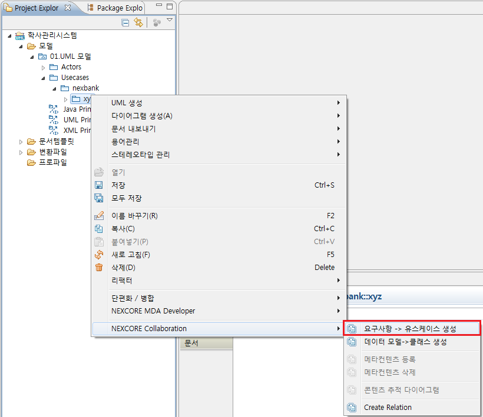
유스케이스 생성 다이얼로그에서 유스케이스로 생성할 RM Requirement를 선택한 후 [OK] 버튼을 선택합니다.
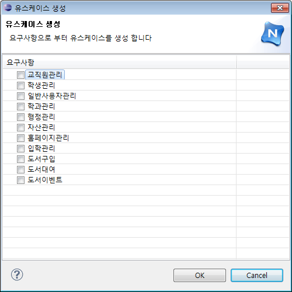
다이얼로그에서 선택한 RM 도구의 Requirement들이 UML 도구의 UseCase로 생성되었습니다.
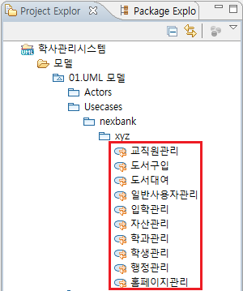
3. DM (Data Modeler)도구 연계
DM 도구에서 생성한 Element를 가져와 UML 도구의 analysisClass를 생성하는 기능입니다.
3.1 DM Element - UML Entity Class 연계
Class를 생성할 위치에서 마우스 우클릭 후 [NEXCORE Collaboration] > [데이터 모델 -> 클래스 생성] 을 선택하면 Data Element를 가져오는 다이얼로그가 나타나게 됩니다.
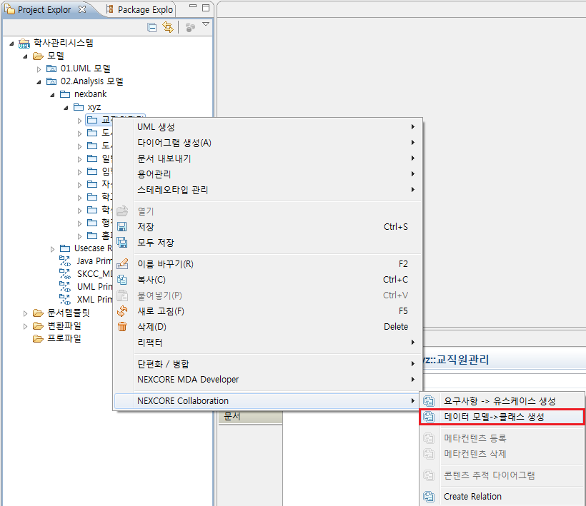
클래스 생성 다이얼로그에서 클래스로 생성할 Data Element를 선택한 후 [OK] 버튼을 선택합니다.
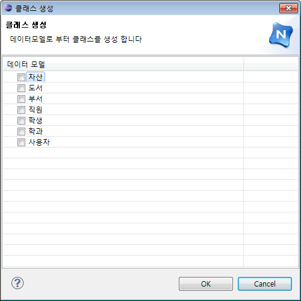
다이얼로그에서 선택한 DM 도구의 Element들이 UML 도구의 Class로 생성되었습니다.
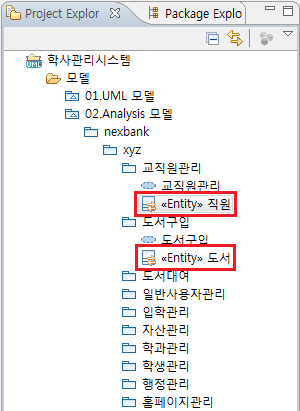
4. 특성 창을 이용한 도구 연계
다른 도구와 공유하는 데이타를 특성 창에서 관리할 수 있습니다. 공유 데이타는 특성 창에 [연계 정보] 탭이 생성되고 연계된 도구의 정보가 나타납니다. 연계 정보의 추가적인 생성, 삭제를 수행할 수 있는 [생성], [삭제] 버튼이 있으며, 연계 데이타의 상세 정보를 볼 수 있는 [상세정보] 버튼이 있습니다. 또한 실시간으로 연계되는 데이타를 조회할 수 있도록 [새로고침] 버튼이 존재합니다.
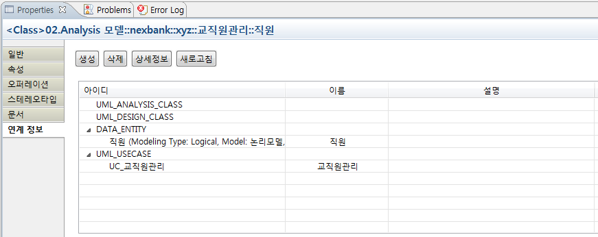
[생성] 버튼을 누르게 되면 아래와 같은 콘텐츠 검색 다이얼로그가 나타나게 됩니다. 연계할 리소스 정보를 입력하고 [검색]을 눌러 연계 가능한 데이타를 검색할 수 있습니다.
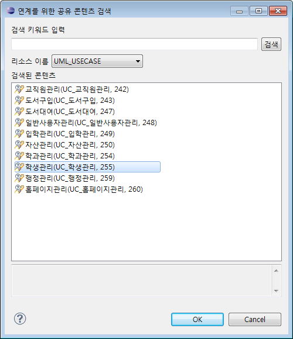
검색된 데이타를 선택한 후 [OK] 버튼을 누르게 되면 연계 정보가 생성됩니다.
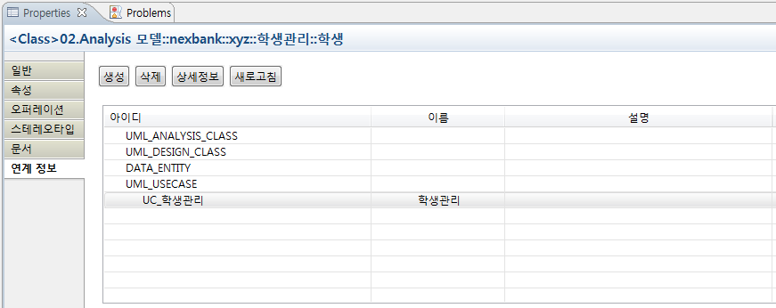
[상세정보] 버튼을 누르게되면 아래와 같은 상세정보 다이얼로그가 나타나게 되며 연계된 데이타의 상세정보를 확인할 수 있습니다.

5. 콘텐츠 등록/삭제
연계를 위해 저장소에 UML 모델 요소를 등록 할 수 있습니다. Project Explorer 에서
유스케이스, 클래스 요소를 선택하고 팝업메뉴를 실행 합니다.
5.1 콘텐츠 등록
아래와 같이 콘텐츠로 등록 할 클래스/유스케이스를 선택하고 '콘텐츠 등록'을 실행 합니다.
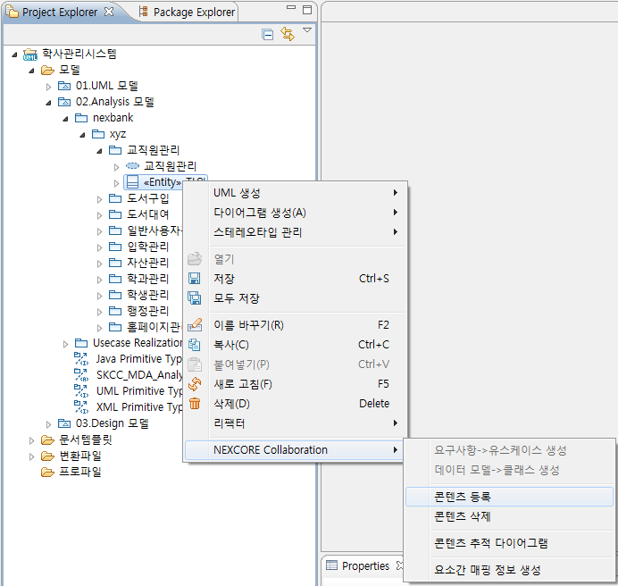
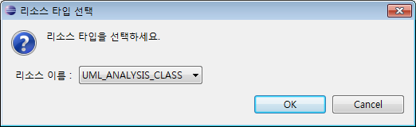
콘텐츠 등록을 실행하면 등록 할 리소스 타입을 선택하는 확인 창이 실행 됩니다. 클래스의 경우 분석클래스/설계클래스 구분하여 등록 해야 하므로 등록 하고자 하는 리소스 타입을 선택하고 OK 를 클릭하여 콘텐츠를 등록 합니다. 이미 등록된 콘텐츠의 경우 변경 된 정보로 갱신 됩니다.
5.2 콘텐츠 삭제
등록된 콘텐츠 삭제시 아래와 같이 '콘텐츠 삭제'를 실행합니다. 저장소에 등록된 콘텐츠가 삭제 됩니다.
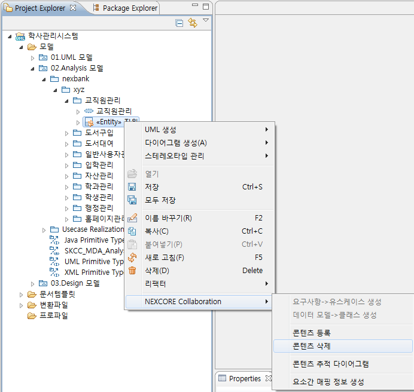
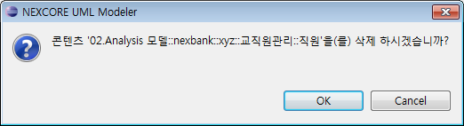
6. 저장소 동기화
콘텐츠는 저장소에서 관리 됩니다. 타 도구와 연계되는 콘텐츠는 모두 저장소에 저장되어 있으며 저장소 동기화 기능을 이용하여 콘텐츠를 관리 할 수 있습니다. 로컬에 존재하는 유스케이스, 클래스,
컴포넌트 등의 모델요소를 메타화 하여 저장소에 등록 합니다. UML 에서 등록한 콘텐츠는 UML 요소간의 연계 혹은 타도구에서 연계를 위해
사용됩니다.
UML에서 사용하는 콘텐츠의 유형으로는 유스케이스(UseCase), 분석클래스(Analysis
Class), 설계클래스(Design Class) 로 구분 됩니다.
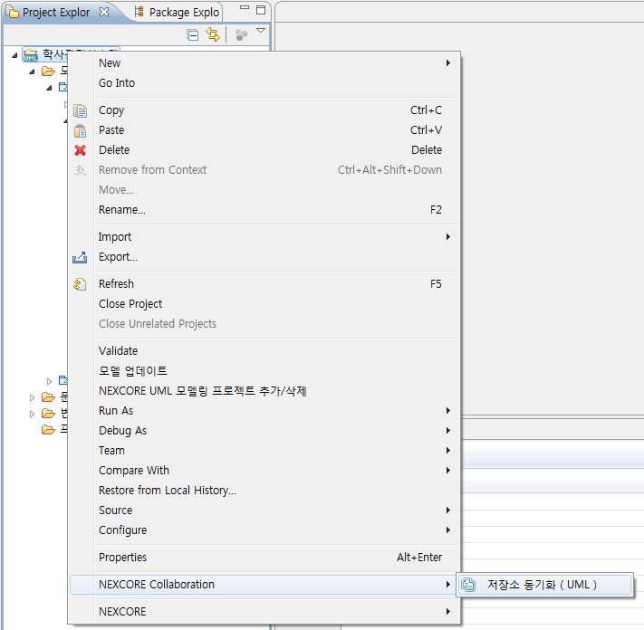
위 그림과 같이 프로젝트를 선택하고 [NEXCORE Collaboration] > [저장소 동기화(UML)]을 실행하면 아래와 같이 동기화 창이 실행 됩니다.
 |
트리 전체 접기 |
| 전체 체크 | |
 |
전체 체크 해제 |
| 로컬 요소와 저장소 비교 | |
| 콘텐츠 등록/수정 | |
 |
저장소 콘텐츠 삭제 |